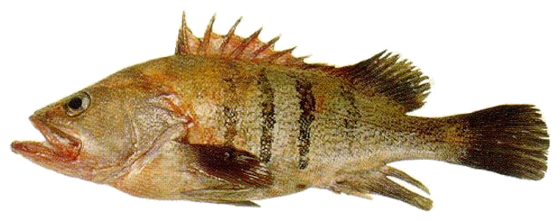
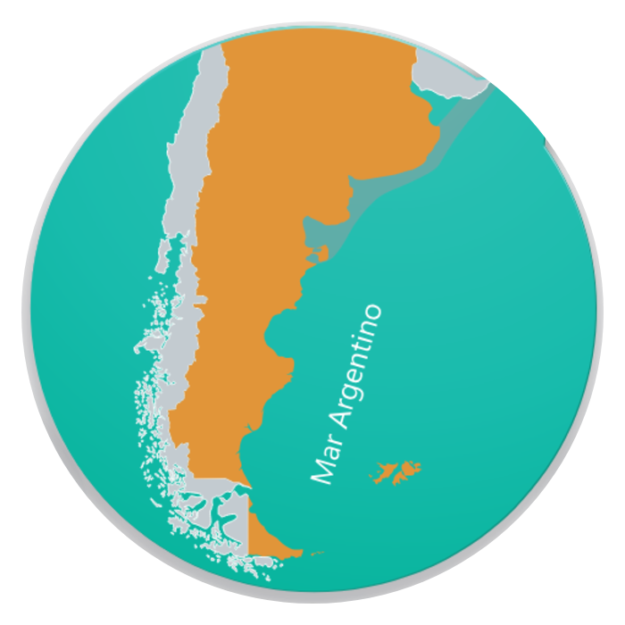

FICHA TÉCNICATECHNICAL DATA SHEET
Mero — Patagonian Grouper
Acanthistius patachonicus (Jenyns, 1840)
Identificación / Identification
Nombre comercialCommercial nameMeroPatagonian Grouper
Nombre científicoScientific nameAcanthistius patachonicus
FamiliaFamilySerranidae
ÓrdenOrderPerciformes
Código HSHS Code0302.89 / 0303.89
Zona de pesca / Fishing area
OcéanoOceanAtlántico SudoccidentalSouthwest Atlantic
Zona FAOFAO Area41
PaísCountryArgentina — Mar ArgentinoArgentina — Argentine Sea
DistribuciónDistribution30°S–48°S (sur de Brasil–Patagonia) · arrecifes rocosos y fondos mixtos30°S–48°S (southern Brazil–Patagonia) · rocky reefs and mixed bottoms
ProfundidadDepth5–100 m5–100 m
Arte de pescaFishing gearArrastre de fondo costero/offshore; nasas y línea artesanalCoastal/offshore bottom trawl; traps and artisanal handline
TemporadaFishing seasonTodo el año · pico nov–feb · agregaciones ago–dicYear-round · peak Nov–Feb · spawning aggregations Aug–Dec

Biología / Biology
Talla máx.Max size80 cm / 6.010 g (INIDEP) · 65 cm (IUCN)80 cm / 6,010 g (INIDEP) · 65 cm (IUCN)
LongevidadLongevity48–50 años48–50 years
MadurezMaturity29 cm / 8 años29 cm / 8 years
CrecimientoGrowthL∞ ≈ 66 cm · k 0,08L∞ ≈ 66 cm · k 0.08
ReproducciónReproductionAgo–dic · desove parcial oct–novAug–Dec · partial spawning Oct–Nov
DietaDietCangrejos, bivalvos, cefalópodos, peces y poliquetosCrabs, bivalves, cephalopods, fish and polychaetes
Especie longeva y de crecimiento lento, asociada a arrecifes rocosos, cuevas y fondos mixtos. Forma agregaciones reproductivas; juveniles costeros y adultos más profundos. Su baja tasa de renovación la hace vulnerable a la presión pesquera.
Long-lived, slow-growing species associated with rocky reefs, caves and mixed bottoms. It forms spawning aggregations; juveniles are coastal and adults occur deeper. Its low renewal rate makes it vulnerable to fishing pressure.
Presentaciones / Presentations
| ProductoProduct | PresentaciónForm | Envase y congeladoPacking & freezing |
|---|---|---|
| Entero | Con cabeza, evisceradoWith head, gutted | Fresco 0–4 °C · Congelado IQF / Block |
| Tronco / H&G | Sin cabeza ni víscerasHeaded and gutted | Congelado · IQF / Block |
| Filete | Sin piel y sin espinasSkinless, boneless | Congelado · IQF / Block |
Producto fresco refrigerado o congelado a bordo/en tierra. Conservación congelada a ≤ −18 °C.
Fresh refrigerated or frozen on board/on shore. Frozen storage at ≤ −18 °C.
Composición nutricional / Nutritional composition (per 100 g, raw)
14–20 g
ProteínaProtein
1,0–1,5 g
LípidosFat
0,71 g
Omega-3 (EPA+DHA)
85–95 kcal
EnergíaEnergy
Proteína y omega-3: referencia FishBase/FAO (0,40–1,31 g omega-3/100 g). Lípidos y energía: estimación genérica para mero. No sustituyen un análisis de laboratorio del lote.Protein and omega-3: FishBase/FAO reference (0.40–1.31 g omega-3/100 g). Fat and energy: generic mero estimate. Not a substitute for a batch laboratory analysis.
Conservación y trazabilidad / Storage & traceability
ConservaciónStorageFresco 0–4 °C · Congelado ≤ −18 °CFresh 0–4 °C · Frozen ≤ −18 °C
SistemaSystemIQF / BlockIQF / Block
Vida útilShelf lifeFresco: cadena de frío · Congelado: 24 mesesFresh: cold chain · Frozen: 24 months
TrazabilidadTraceabilityPor lote / capturaBy batch / catch